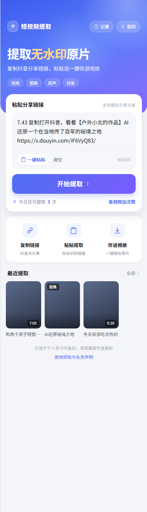
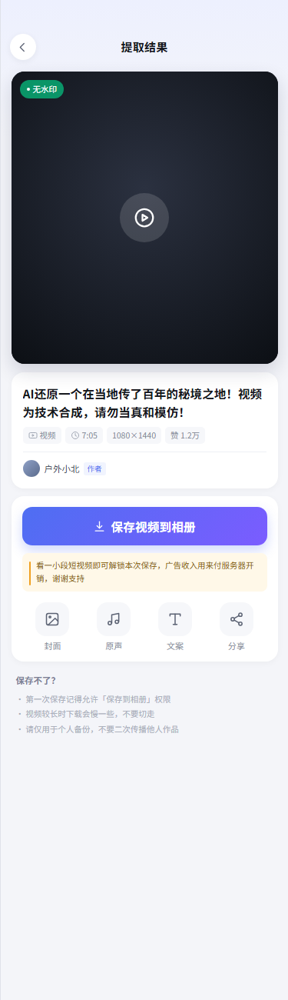
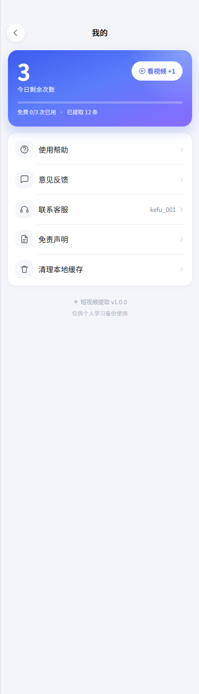
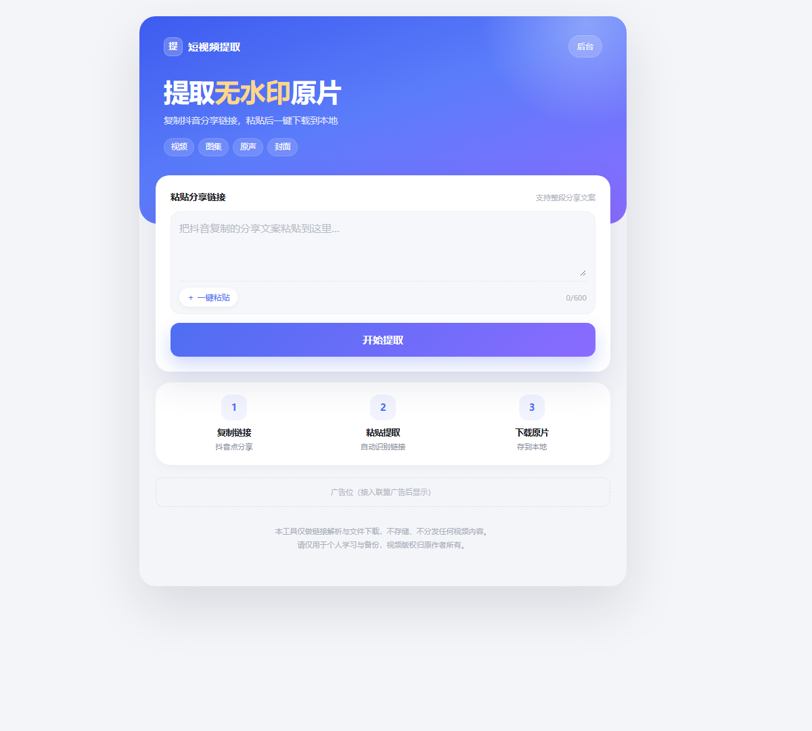

从粘贴到保存，路径最短，没有多余步骤

首页 · 粘贴即提取

结果页 · 预览与保存

我的 · 额度与设置

网页版 · 电脑端
左边是自动轮播的真实界面，右边是操作步骤
直接拿平台播放器使用的原始直链，1080P 无水印，不是二次转码的糊版本。
图文作品一次保存全部图片，也能单独下载封面图与原声 MP3。
手机微信存相册；电脑微信弹「另存为」可选文件夹；浏览器直接下载。
解析成功率、平均耗时、失败原因分布、用户反馈，一屏看完。
激励视频、Banner、插屏三类广告位，后台改配置即时生效，不用重新发版。
下载地址带 HMAC 签名与时效，过期失效，防止被外部盗刷带宽。
这是整个项目最有技术含量的部分
403 Uifid Not Found 拦截
UIFID 由平台签发